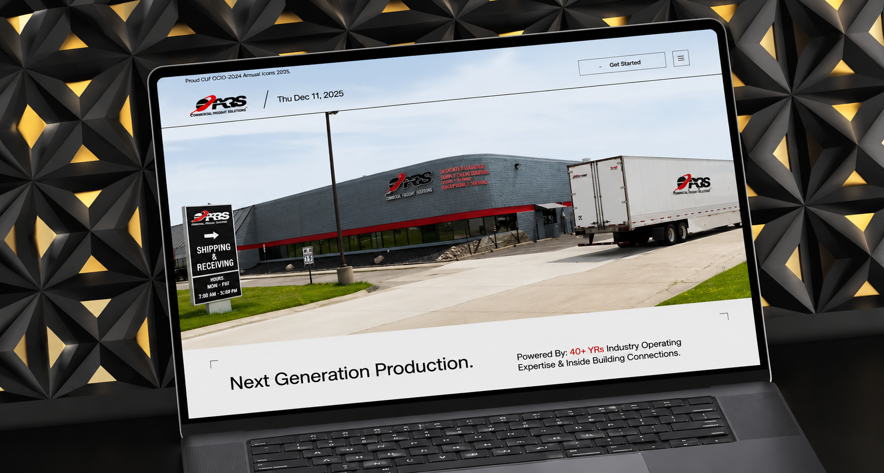

The Global Logistics Portal is a secure logistics and supply chain management platform designed to simplify global shipment tracking, freight management, and operational workflows. Built with a focus on security, reliability, and performance, the platform enables businesses to manage logistics operations efficiently while ensuring secure data exchange and real-time visibility across the supply chain.
Project:
Global Logistics Portal
Timeline:
Ongoing
Scope:
Full Website Design & Development, UI/UX Design, Secure Web Development, Logistics Dashboard, Shipment Tracking Interface, Responsive Development, CMS Integration, Blog Setup, Performance Optimization, SEO Implementation, Lead Generation, Security-Focused Architecture, Interactive Components, Micro-Interactions

Developing a secure global logistics platform required balancing operational efficiency, real-time visibility, and enterprise-grade security. The website needed to communicate complex logistics services clearly while providing a seamless experience for businesses managing global shipments and supply chain operations.
At Infotive Solutions, we transformed complex logistics operations into a secure, scalable, and user-friendly digital platform by combining modern UI/UX, enterprise-grade development, and performance-driven architecture that helps logistics businesses operate with confidence and efficiency.
At Infotive Solutions, we developed the Global Logistics Portal with a focus on security, scalability, and operational efficiency. Our approach combined modern UI/UX, responsive development, and enterprise-grade architecture to deliver a reliable digital platform for logistics and supply chain management.
Infotive Solutions specializes in building secure, scalable, and high-performance logistics platforms that streamline operations, strengthen digital presence, and support long-term business growth through innovative web solutions.
The Global Logistics Portal reflects Infotive Solutions' expertise in building secure, scalable, and enterprise-grade logistics platforms. By combining modern design, intelligent development, and performance-focused architecture, we delivered a digital solution that enhances operational efficiency, builds customer confidence, and supports long-term business growth.